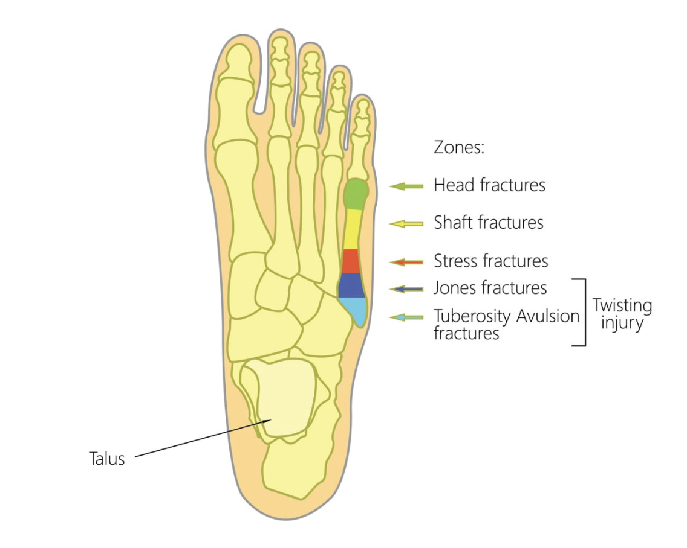
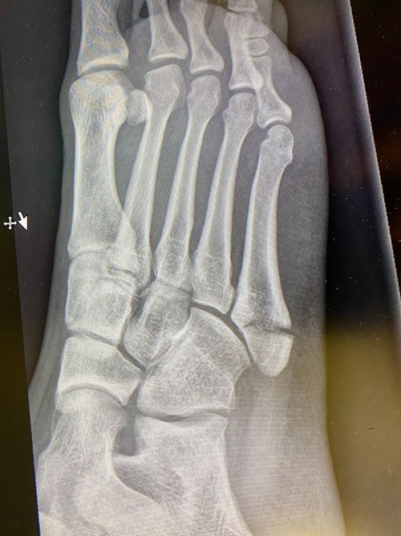
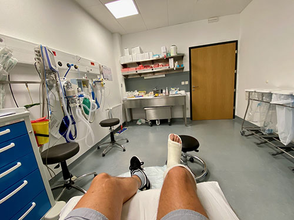

This August it has been 1 year since my fifth-metatarsal fracture. It happened very simply. Someone landed on my foot while we were playing basketball and things drastically changed the next 3 (to 6) months of my life. Doing a scan in the hospital, the doctor on duty said: looks not bad, just don't do heavy hiking haha. Then he came back 5 minutes later more concerned and said we need to do more x-rays. And so, instead of the planned 3 week vacation starting next day the situation turned into 6 weeks of moving around with cast and crutches and absolute no-no for putting any weight on the foot. Even with all this measures, the outcome was uncertain and it was impossible to predict if I would need an operation afterwards with another 6 weeks of cast and 3-months recovery. In fact, the scans after 1 and 2 weeks showed the bone was not healing at all. In retrospect I learned this was a "conservative" treatment for such fractures. A more drastic (and faster in terms of recovery) approach is to just operate. However, operations have their own risks etc., so in literature, there is no clear judgement what works best.
The human foot is a marvelous, complicated and very efficient combination of bones, ligaments and muscles. And the base of the fifth-metatarsal bone is indeed very small but if broken, it is also very tricky to heal, due to the low blood supply to the bone. Moreover, it is one of the 3 points where all your body weight is pressing down when you walk or stand or run.

Source: https://upswinghealth.com/conditions/fifth-metatarsal-fractures/
Of course by lying in bed or sitting in a chair and with a swallen foot that needed to be lifted most of the time, I didn't have the will to even do much work. It was a logistic nightmare to even make coffee, since not being allowed resting/touching the floor with the foot and moving around with crutches, doing the simplest tasks in the kitchen becomes almost impossible. And you can't carry things around, you have no free hands. I seriously understood how important mobility is. And how detrimental and incapacitated you can be even with a cast on a broken foot that you can't rest on the ground. I value mobility now much more then I would ever think possible.

Source: myself
And like every fool that get's an injury or illness I did my research. I knew more about fifth-metatarsal treatment then the doctors I was seeing, or at least I thought I knew more. In fact, I did the most stupid thing one in my situation could do. I had thousands of questions and fears and worries and I read around 50 peer-reviewed articles on different fracture types. To be honest, in the end I self-diagnosed myself and knew pretty well what happened to me, but the thing I was lacking was knowledge on how the future would look like for me. This kind of knowledge only an experienced doctor who sees hundreds of these fractures can discuss, no book or paper could help me.

New shoe
Time was passing by and I was surprised to realize how difficult it would be to get relevant information. The main advice was very simple: we can do nothing but wait 6 weeks and then see what happens. So I waited and we removed the cast after 6 weeks. The foot was painful to walk on, they gave me a hard-sole for the shoe and told me to walk as much as I wanted. Still the pain was there and I didn't know where this would go. Come back after another 6-weeks post cast removal (12-week post-incident) was the main instruction, but no serious answers on any possible outcomes. Yes, I asked many questions, but there were no serious answers, which was very very frustrating.
I finally managed to get proper treatment at a specialized clinic and the surgeon looking at my CT scans (10 weeks post injury) told me in 5 minutes everything that I already somehow knew from the literature I was reading. And also told me: "it will heal, throw away the shoe implant and walk as normally as you can. You can run, you can dance, it may come to haunth you when you are older but don't worry. I wouldn't operate it since nerve damage is very likely and it can make it much worse."
That was all it took to make my mind more at peace and accept the situation. It would be beneficial if someone could tell me this like at the beginning not at the end. Overall, it took 6 months after the injury for me to forget about it during some of the days, and today 1 year later I can say I don't think about it mostly and only notice it during bad weather, but can move around normally, even do 1h of running and a whole day of bicycle. If it stays like that, I am happy.
I can say I learned a lot and mostly about myself. Looking in retrospect, I am a theoretical expert on fifth-metatarsal fractures now, but this didn't change my situation. Even if I would not read any papers or documents, the outcome would be the same, and perhaps I would avoid some of the not-knowing-what-happens anxiety. But we are as we are, we want to know as much as possible and I don't regret it. Better to be knowledgeable than to be ignorant. It was just a very painful process (mostly because of lack of info), and a lot of the pain could have been avoided if I did get serious and proper evaluation and advice from the beginning.
This experience was also a push to change priorities and some behaviours in life. It was the start of the end of a relationship that was not working anymore and crisis of course always precipitate such developments. It was also the realization that some friendships were actually not there anymore and some friendships are there despite lack of contact.
I think it was all for the best and it taught me to value myself, value good relationships and friendships and not to spend much time on trying to please and keep connections that do not work at all. It also made me realize and value mobility. A strong push to take better care of my body and also mental health. Avoiding destructive behaviours. A painful but all in all beneficial and transformative experience.
Do take advantage of the opporunities you have in life. If you can walk, walk, you can hike? hike, can run? run. Or go around by some other means.
Mobility is not only physical, it's also about your mental landscape. Be mobile in the mind, if something doesn't work, find other paths, you can travel in your mind and be active in searching new solutions to old problems. Don't be silly, don't be a fool. Move your body. Move your mind.
References
- Fifth Metatarsal Fractures
- Fractures of the Fifth Metatarsal
- Effect of Weight-Bearing in Conservative and Operative Management of Fractures of the Base of the Fifth Metatarsal Bone
- We Broke the Same Bone. My Recovery Was a Breeze, Hers an Ordeal. Why?
- Jones Fractures
- Proximal fifth metatarsal fractures